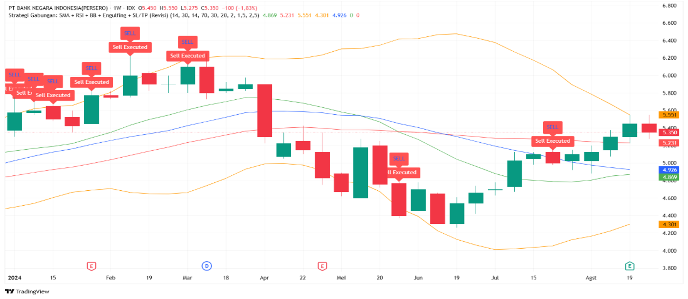
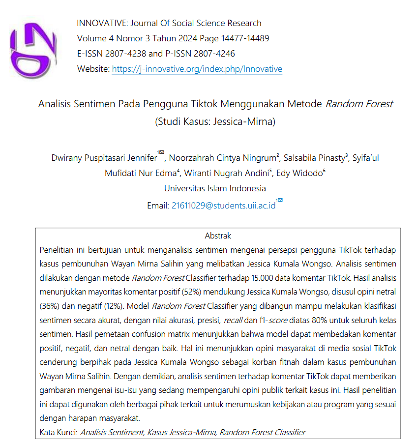
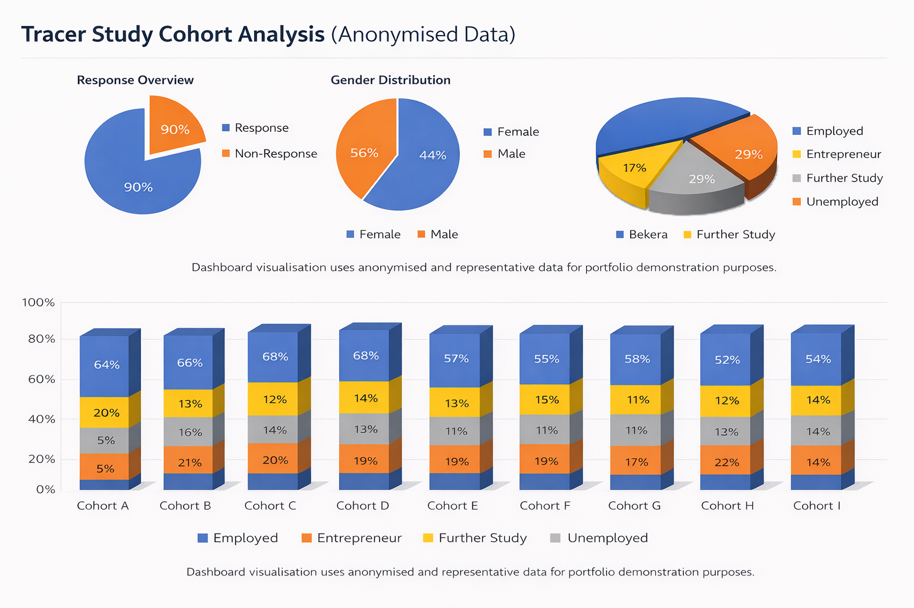
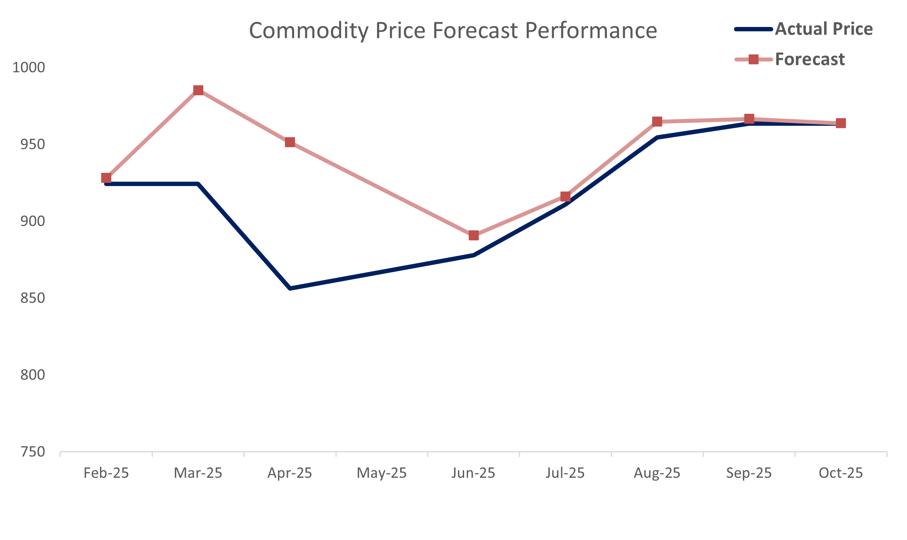
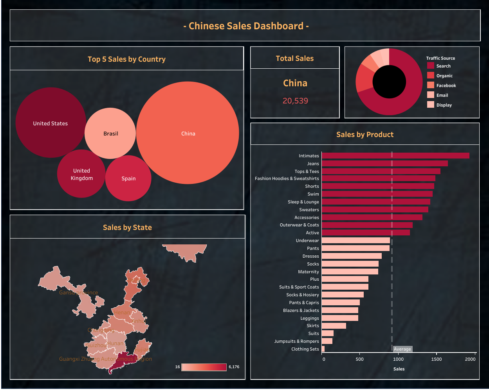

IDX30 Backtesting Analysis
Quantitative stock forecasting and backtesting project combining technical indicators and trading strategies to evaluate market trends and investment performance.
Business Data Analyst Portfolio
Forecasting • Business Intelligence • Data Visualization • Business Analytics
Explore ProjectsABOUT ME
Data Analyst passionate about solving business challenges through forecasting, business intelligence, and data-driven decision making.
Experienced in operational analytics, statistical forecasting, business reporting, and data storytelling through interactive dashboards.
Strong interest in business intelligence, financial analytics, forecasting models, and strategic business performance evaluation.
CORE SKILLS
FEATURED PROJECTS

Quantitative stock forecasting and backtesting project combining technical indicators and trading strategies to evaluate market trends and investment performance.

Sentiment analysis project evaluating 15000 TikTok user opinions and public perception trends using text analytics.

Cohort analysis dashboard visualising graduate outcomes, employment trends, and further study statistics.

Forecasting commodity price trends using statistical modelling and operational datasets.

Interactive Tableau dashboard analysing sales performance, customer traffic sources, and product trends.

K-Means clustering analysis identifying warehouse utilisation patterns and logistics insights.
EXPERIENCE
CONTACT
Email: jennifer.puspitaa@gmail.com
LinkedIn: linkedin.com/in/jenniferpuspita
GitHub: github.com/pittyjenn